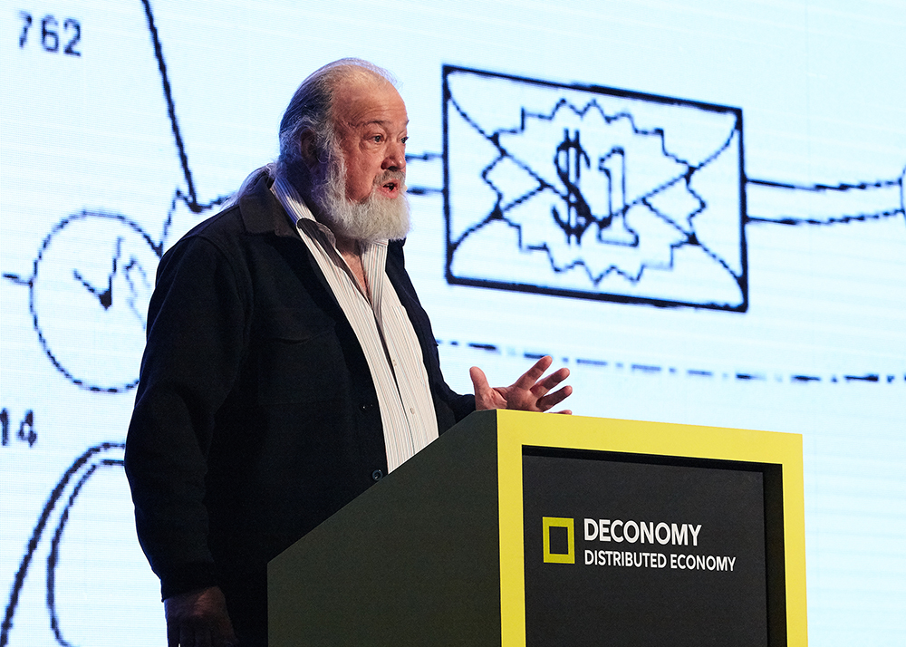
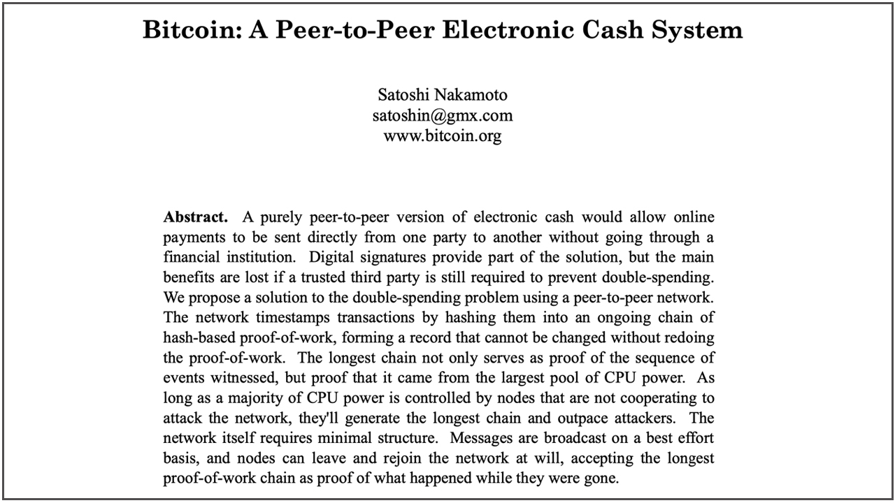
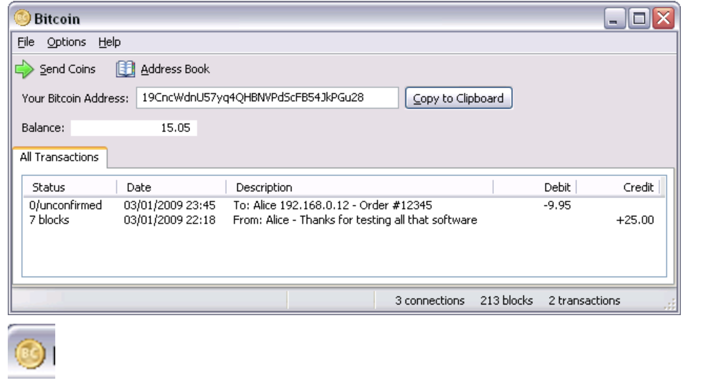
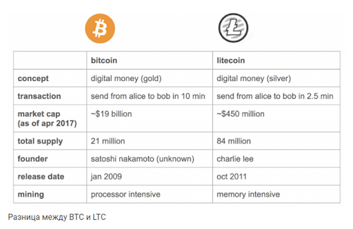

История криптовлюты: первая в мире крипта
Благодаря созданию виртуальных денег сформировался новый криптовалютный рынок и целая индустрия с капитализацией более $2 трлн. На базе существующих блокчейнов создаются тысячи децентрализованных приложений. Таким образом, сейчас можно наблюдать масштабную реализацию того, что 30 лет назад было только идеей.
Предыстория возникновения криптовалют
Еще в 60-х годах прошлого столетия профессиональные криптографы обсуждали возможность создания глобальной информационной сети. Первые практические шаги в этом направлении были сделаны в 80-е. При помощи инфосети начали производить обмен брокерскими данными, которые были нужны для торговли на биржах.
В это же время появилась идея цифровых денег. Основная ценность концепции сводилась к возможности быстрой покупки акций, различных финансовых активов и их деривативов.
В то время над реализацией идеи электронных денег работали американские криптографы Дэвид Чаум и Стефан Брэндс. Они описали принципы работы анонимной системы цифровых платежей, а также предложили первые протоколы «электронной наличности».
-

Дэвид Чаум
В 1990 году Дэвид и Стефан создали компанию DigiCash, которая специализировалась на разработке и внедрении денежной системы eCash. У нее была функция поддержки конфиденциальности электронных платежей и присутствовала криптографическая защита данных.
Основным отличием eCash от современных криптовалют было централизованное управление. В 1998 году эта платформа обанкротилась. Но сама идея использования быстрых анонимных платежей была замечена многими шифропанками.
Немалый вклад в становление криптовалюты сделал Адам Баков. Именно он в 1997 году применил HashCash – технологию, устойчивую к спаму и DoS-атакам. Позже ее усовершенствованием занялся Хэл Финни. Ему удалось создать более совершенный алгоритм контроля электронных платежей. Суть улучшения сводилась к внедрению цепочки из хэш-блоков в работу с транзакциями.
-
Адам Баков
Технология HashCash стала одной из ключевых концепций в процессе создания первого блокчейна. На ее основе в 1998 году двое разработчиков независимо друг от друга запустили свои цифровые проекты:
- Вэй Дай – проект B-money.
- Ник Сабо – проект Bit-Gold.
Каждый из них в качестве базы для работы системы использовал децентрализованный реестр. Фактически эти проекты Вэя и Ника стали прототипами криптовалюты. Позже Сатоши Накамото сошлется на B-money как на основополагающую технологию для разработки Bitcoin. Первая цепочка блоков была создана Хэлом Финни в 1998 году, а через некоторое время он тоже присоединится к проекту Bitcoin.
-
Хэл Финни
Таким образом, технология blockchain и криптовалюта – это результат усилий группы людей. Но финальный шаг в реализации идеи цифровых денег сделал анонимный разработчик под псевдонимом Сатоши Накамото (Satoshi Nakamoto).
История создания криптовалюты
Кто именно скрывается под именем Satoshi Nakamoto — до сих пор достоверно не известно. Есть мнение, что этот псевдоним использовала целая группа специалистов. Все началось в 2007 году с формирования идеи децентрализованной цепочки блоков blockchain и криптовалюты биткоин версии 1.0.
Весь путь развития биткоина можно разделить на отдельные этапы.
2007 годВ это время Сатоши начал работать над принципами построения распределенной сети — то есть системы без центрального управления.
2008 годНеизвестный человек или группа лиц под псевдонимом Satoshi Nakamoto опубликовали текстовый файл White Paper, в котором рассказали о том, что такое биткоин. В документе содержалось описание работы цифровой платежной системы, а также информация о ключевых особенностях блокчейна и биткоина.
 2009 годВ январе этого года была произведена разработка первых клиентов Bitcoin 0.1/0.1.0/0.1.5.
После генерации начального блока «Genesis 0» были получены первые 50 ВТС. Вскоре разработчики криптовалюты произвели тестовую транзакцию: Сатоши отправил 10 ВТС другому участнику сети и тот их успешно получил.
Презентованная в январе 2009 года версия блокчейна могла работать только на Windows 2000, Windows NT и Windows XP. Поэтому сразу после релиза первого клиента создатели этой технологии занялись доработкой блокчейна.
В сентябре 2009 года впервые была выполнена покупка биткоина за фиатную валюту. Сумма сделки составила 5,02 USD. За эти деньги Марти Малми продал пользователю NewLibertyStandard 5050 ВТС. Доллары были перечислены на счет в PayPal.
В ноябре 2009 года разработчики биткоина решили создать портал bitcoin.org. Сайт быстро привлек внимание тех, кто был заинтересован в криптовалюте. На площадку приходило много людей, то есть сформировалось первое криптосообщество. Чуть позже на базе этого портала был запущен форум Bitcointalk.org. Он сыграл одну из ключевых ролей в популяризации биткоина и дальнейшего развития сообщества.
В декабре 2009 года был выпущен клиент Bitcoin 0.2, который мог функционировать уже и на Linux. Новая версия децентрализованной сети позволяла запускать процесс генерации блоков несколькими параллельными потоками. Такое обновление ощутимо повысило эффективность майнинга.
Поскольку добывать монеты стало проще, майнить криптоденьги массово начали обычные пользователи. Это привело к быстрому росту биткоин-сообщества. В этот же период разработчики приступили к реализации API-интерфейса JSON RPC. А сообщество, объединенное идеей криптовалюты, начало активно участвовать в разработке биткоина.
2010 годЛетом этого года был выпущен Bitcoin 0.3. Сложность майнинга возросла. Но популяризация биткоина сделала свое дело – количество пользователей, добывающих криптомонеты, стремительно росло.
Из-за усложнения добычи разработчики посоветовали майнерам использовать видеокарты для ускорения вычислений. Пользователь под ником ArtForz оценил эту идею и решил создать первую криптоферму.
В августе 2010 года был обнаружен серьезный баг системы. Суть проблемы сводилась к тому, что перед добавлением сделок в блокчейн не проводился их анализ. Выявив это слабое место, неизвестные злоумышленники 15 августа произвели атаку на систему. Им удалось сгенерировать в одной транзакции 184 млрд монет и отправить их на 2 адреса.
Разработчики быстро исправили баг системы и отменили хакерскую транзакцию. Но пользователи были неприятно удивлены такой уязвимостью. Чтобы подобные истории не повторялись, сеть была переведена на новую версию протокола. Больше проблем с хакерами не возникало.
В ноябре 2010 года сформировался первый майнинг-пул под названием Slush’s Pool. Его появление было логичным, поскольку конкуренция в сфере добычи биткоинов постоянно росла. Обычным пользователям стало легче объединять усилия для генерации блоков сети. Так добыча монет становилась более реальной задачей, в сравнении с майнингом при помощи одного ПК. Впоследствии пулы стали популярны за счет обеспечения стабильного дохода от добычи криптовалюты.
В конце 2010 года была выпущена финальная версия клиента Bitcoin (0.3.9). В это же время человек (или команда людей), скрывавшийся за псевдонимом Сатоши Накамото, покинул проект без объяснения причин. До сегодняшнего дня было выдвинуто множество предположений о том, кто является создателем первой криптовалюты. Но однозначной версии нет до сих пор.
В дальнейшем разработчики, входившие в криптосообщество, начали работать над созданием других цифровых валют.
Пицца стоимостью 10.000 BTC
Еще в 2010 году курс биткоина был низким, потому что монеты добывались без особого труда. Пользователи занимались майнингом ради интереса, но не имели ясной картины, куда они будут тратить добытые криптовалюты.
Однажды на форуме, посвященном теме биткоина, человек по имени Ласло Хейниц написал, что хочет пиццу и готов заплатить за нее 10 000 ВТС. За эти деньги проголодавшийся пользователь хотел 2 коробки. На то время 10 тыс. биткоинов стоили примерно $50.
Другой участник форума с ником jercos решил откликнуться на это предложение и отправил Ласло 2 пиццы с луком, грибами, помидорами и сосисками. На закупку этой порции jercos потратил $40. В итоге он получил на свой счет обещанные 10.000 ВТС.
Если бы Ласло подождал, он смог бы получить значительно больше денег:
- уже через 1 год 10 000 биткоинов стоили $100 000;
- через 3 года эта цифра изменилась бы на $9 млн;
- по нынешнему курсу 10 тыс. ВТС можно обменять примерно на 500 миллионов USD.
В итоге 2 пиццы, которые заказал Ласло, стали самой дорогой доставкой еды в истории. Во всем мире эта сделка стала известна как Bitcoin-Pizza. Есть даже специальные сайты, которые отслеживают «курс пиццы», показывая текущую стоимость заказа Ласло.
Из этой истории следует простой вывод: не стоит быстро покидать перспективные проекты. Если у актива есть потенциал роста и вложения в него не связаны с высокими рисками, то лучше подождать.
Начало эпохи альткоинов
Со временем в биткоин сообщество приходило все больше профессиональных программистов, которые пытались в той или иной степени улучшить эту технологию. В итоге разработчики разделились на две группы:
- традиционалисты, желающие стабильно работать на базе уже существующего алгоритма;
- специалисты, которые видели возможности в новых и более гибких подходах к использованию технологии blockchain.
Благодаря второй группе криптотехнологии получили сильное развитие и внедрились во многие сферы современного общества.
2011 годВ этом году Амиром Тааки была разработана технология BIP. Ее ключевая ценность сводилась к возможности усовершенствования структуры клиента Bitcoin. Эта разработка помогла нейтрализовать ошибки, которые все еще оставались в коде.
Но самое важное новшество, которое пришло с технологией BIP, заключается в возможности создания новых криптовалют – альткоинов. Первым запустили проект Namecoin, вторым – Litecoin. Это форки (ответвления) биткоина.
Криптовалюта Litecoin (LTC) похожа на Bitcoin, но имеет более высокую скорость проведения транзакций, ее легче майнить и стоит она ощутимо дешевле.
Также в 2011 году были созданы и первые мобильные приложения для работы с криптовалютой.
2012 годОсновным событием этого года стал запуск функции мультиподписей, позволяющей работать с умными контрактами (Smart contract).
Впервые появились сложности, связанные с размером блокчейна ВТС. К решению этой проблемы начали подключаться специалисты из смежных сфер – они искали способ убрать ограничения.
В итоге была разработана технология CryptoNote – протокол прикладного уровня. На его основе разработчики смогли создать целое семейство анонимных криптовалют. В качестве примера можно привести Monero и Bytecoin. Такие криптовалюты обеспечивают высокую степень защиты и быстрое проведение транзакций.
Кроме того, осень 2012 года стала сезоном запуска различных криптовалютных кошельков. Пользователи получили возможность перемещать монеты в офлайн-хранилища и подключать браузерные кошельки.
Результаты популяризации криптовалюты
Чем больше внимания привлекается к технологии блокчейн, тем более совершенной она становится. Разработчики ставят перед собой новые задачи и находят способы решить их. Итог – обогащение криптосегмента новыми проектами с более стабильными, удобными и гибкими функциями.
Популяризация цифровых денег приводит к их активному использованию во всем мире в качестве платежного средства, способа заработка или инструмента сохранения капитала. Смарт-контракты позволяют переводить в цифровое пространство самые разные договоренности. Сейчас при помощи криптовалюты можно оплатить рекламу, еду или номер в отеле.
Популярность криптоденег мотивирует государства создавать собственные цифровые национальные валюты. С их помощью все, что касается платежей и переводов, будет максимально упрощено и ускорено.